食堂楽 管理装置 操作マニュアル（抜粋）
新しい食器をオートレジで使えるようにするまでの手順です。上から順に進めてください。
登録する食器の食器番号を確認します。
オートレジ内にあるキーボードで、次の順にキーを押します。
「診断ログ」というアプリケーションが表示された状態で、登録したい食器をかざします。
「診断ログ」内に表示される 食器ID=XXXX を確認し、控えておきます。
先頭が 0 | 普通の食器。0 に続く3桁が食器コード例：食器ID=0012 → 普通の食器・012 |
|---|---|
先頭が W | 量売り食器。W に続く3桁が食器コード例：食器ID=W005 → 量売り食器・005 |
複数の食器を登録する場合は、1枚ずつかざして食器IDをまとめてメモしておくと、次の登録作業がスムーズです。
管理装置：マスタ管理 タブ → 食器登録
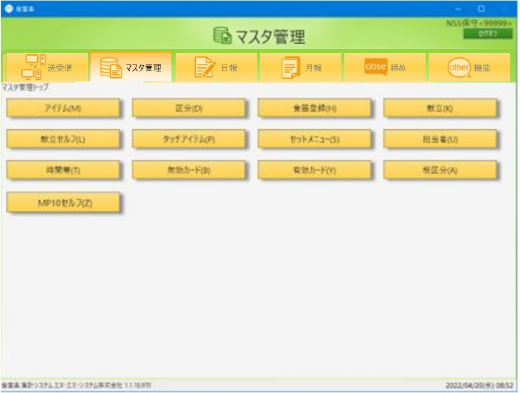
画面左側で、登録する食堂を選択します。
※食器情報は食堂ごとに登録します。
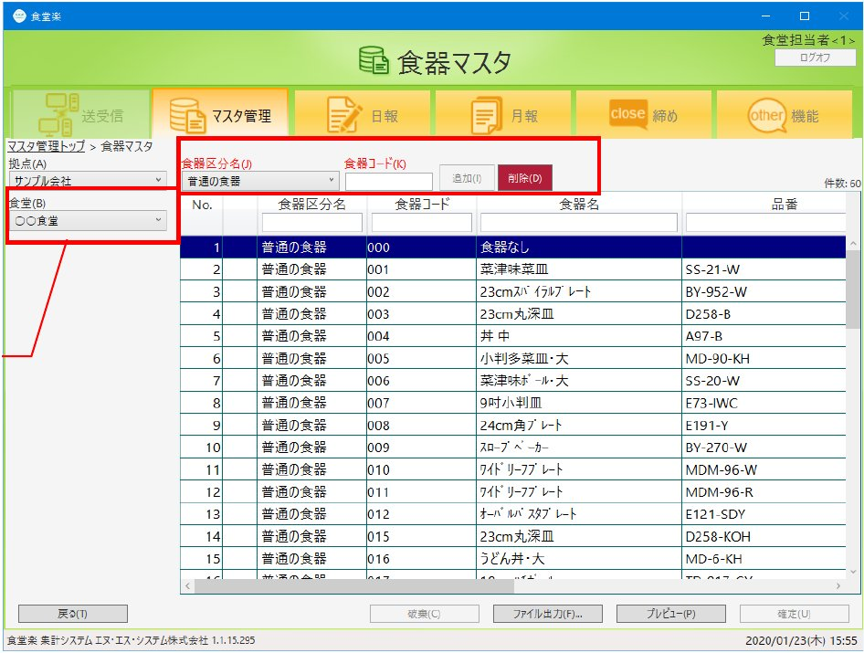
食器区分名を選択します。食器IDの先頭1文字で判断します。
先頭 0 | 普通の食器（通常使用する食器） |
|---|---|
先頭 W | 量売り食器（量り売りに使用する食器） |
食器コードに、食器IDの先頭1文字を除いた3桁を入力します。
未登録の番号であれば 追加 ボタンが有効になるので押します。
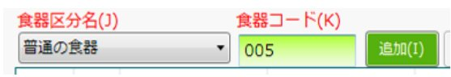
その食器区分＋食器コードはすでに登録済みです。一覧で登録内容を確認してください。
一覧の先頭行に追加された行へ、食器名（必須）を入力します。
品番・メーカー名・仕様・備考は必要に応じて入力します。
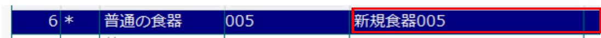
入力が終わったら 確定 を押して登録します。
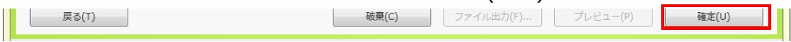
管理装置：マスタ管理 タブ → アイテム
画面左側で食堂を選択し、一覧から食器を紐づけるアイテム（メニュー）を選択します。
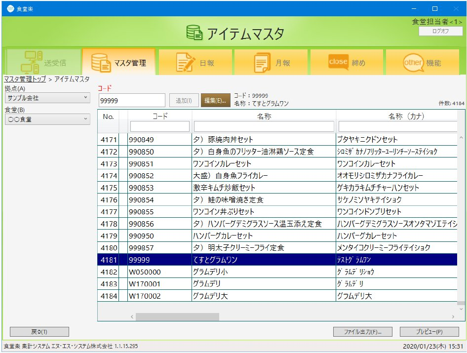
編集 を押すと、アイテム情報画面が開きます。
食器区分と食器名を、2で登録した食器に変更します。
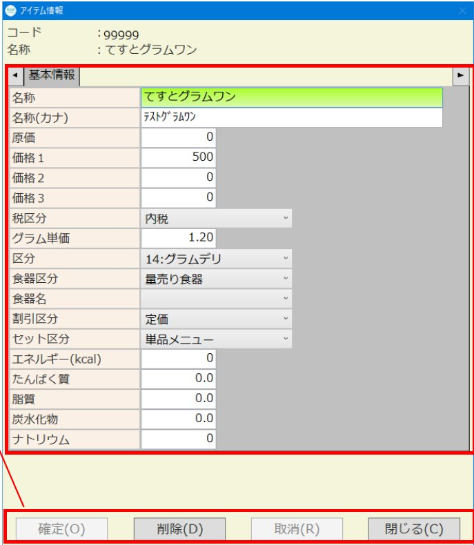
| 食器区分 | 普通の食器／量売り食器 |
|---|---|
| 食器名 | 食器マスタに登録した食器から選択 |
確定 を押して登録し、閉じる で一覧に戻ります。
コード欄に新しいコード（13桁以内）を入力 → 追加 → 名称・価格などと一緒に食器区分・食器名を設定 → 確定 で新規登録できます。
管理装置：マスタ管理 タブ → 献立
画面左側で食堂と時間帯区分（朝食・昼食など）を選択します。
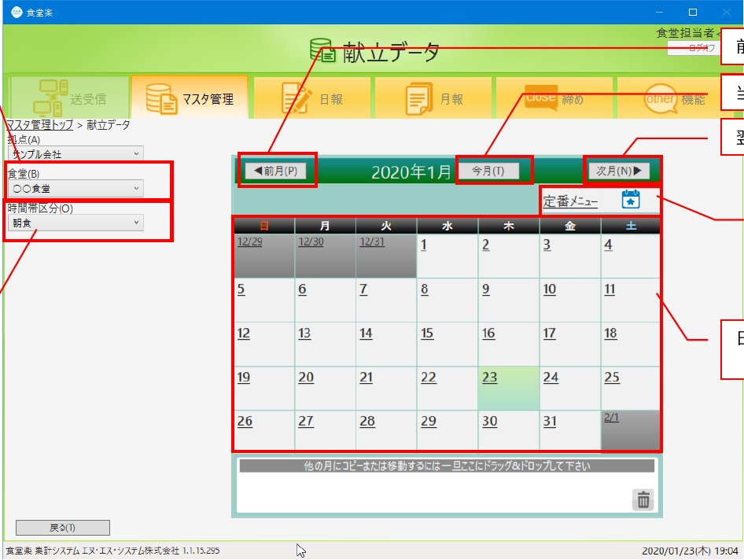
登録先を選びます。
| 日替わり | カレンダーの日付を選択 |
|---|---|
| 毎日提供 | 定番メニュー を選択 |
献立明細登録画面が開きます。左側のアイテム一覧から、3で食器を紐づけたアイテムを選び 追加 を押します。
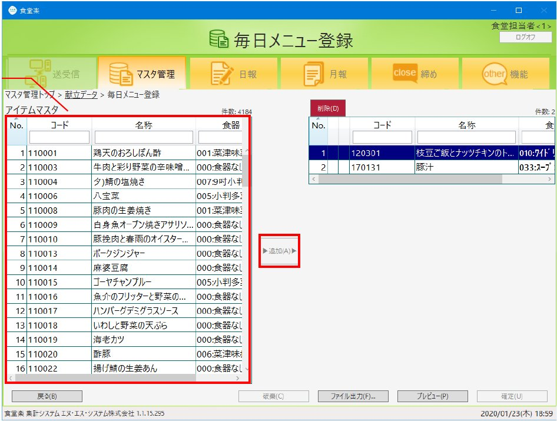
右側の献立一覧にアイテムが追加されたことを確認します。
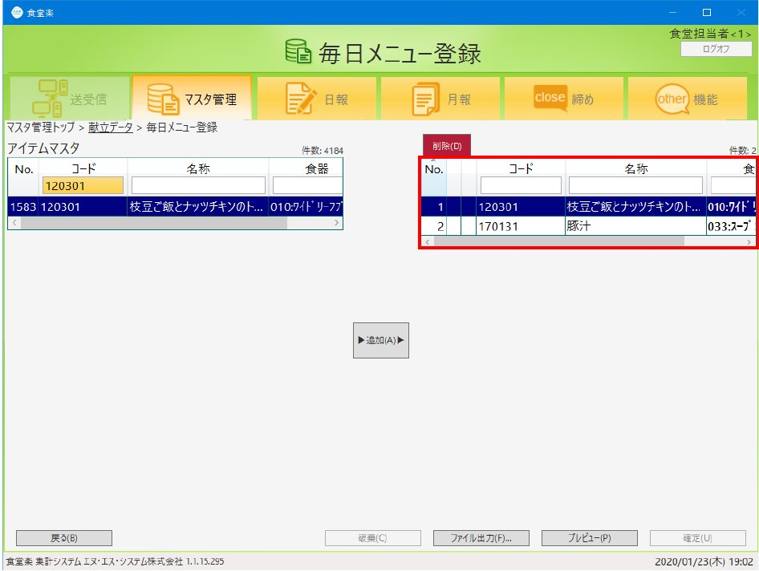
確定 を押して登録します。カレンダーに戻ると、献立登録済みのアイコンが表示されます。
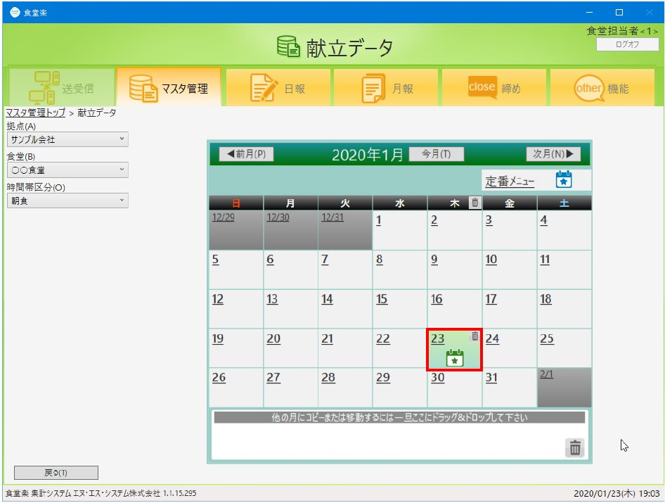
セットメニューを献立に登録するときは、セットを構成する単品メニューも献立に登録してください。
管理装置：送受信 タブ → データ送信
ここまでの登録内容は、データ送信するまでオートレジに反映されません。
送受信タブで データ送信 を押します。
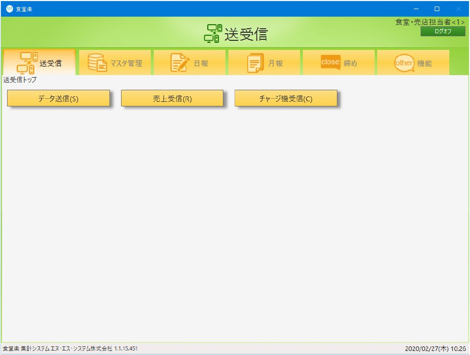
送信する機器の左端のチェックを ON にします。
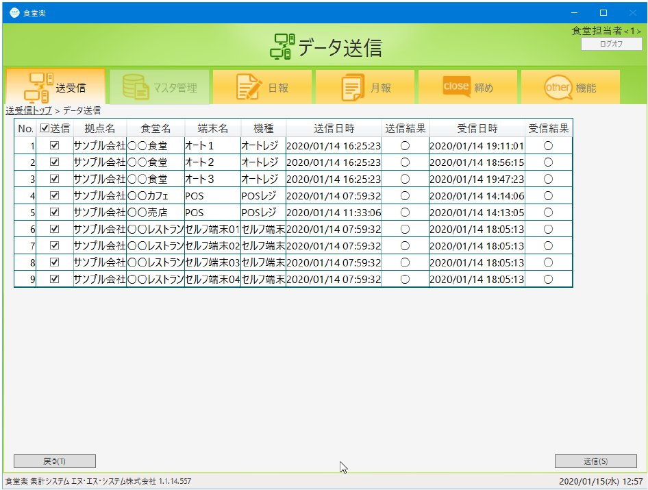
送信 を押すと送信が始まります。
送信結果を確認します。
| ◯ ＋日時 | 正常に送信できました |
|---|---|
| ✕ | 問題が発生しています。再送信しても解消しない場合はお問い合わせください |
送信後、オートレジに新しい食器をかざし、紐づけたアイテムが正しく表示されることを確認してください。